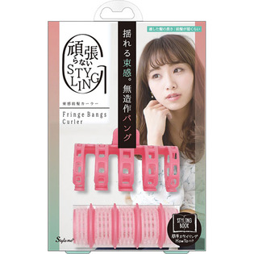

返回列表
产品名称：スタイルミー 束感前髪カーラー

ラッキーコーポレーション スタイルミー 束感前髪カーラー ＿
メーカー ラッキーコーポレーション
JANコード 4903329984043
商品の特徴
●ちょこっとするだけでぱっと垢抜け。
●カールしながら透け感・垢抜けバングヘアのできあがりです。
●簡単、１ランクＵＰできます。
成分・分量
【素材】
クリップ（ＡＢＳ・アルミニウム・鉄）、カーラー（ＰＥ・ナイロン）
用法及び用量
【使用方法】
１、水でぬらした前髪に本品のカーラーを内巻きし、クリップで固定します。
２、ドライヤーを温風→冷風の順にあて、しばらく放置し、クセ付けします。
３、本品をはずし、前髪を流したい方向に手グシでとかします。